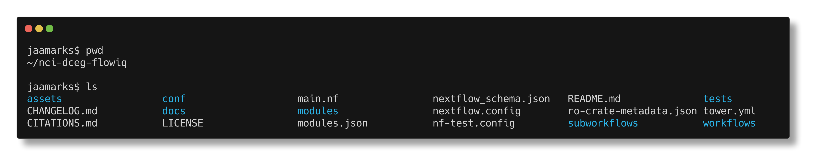
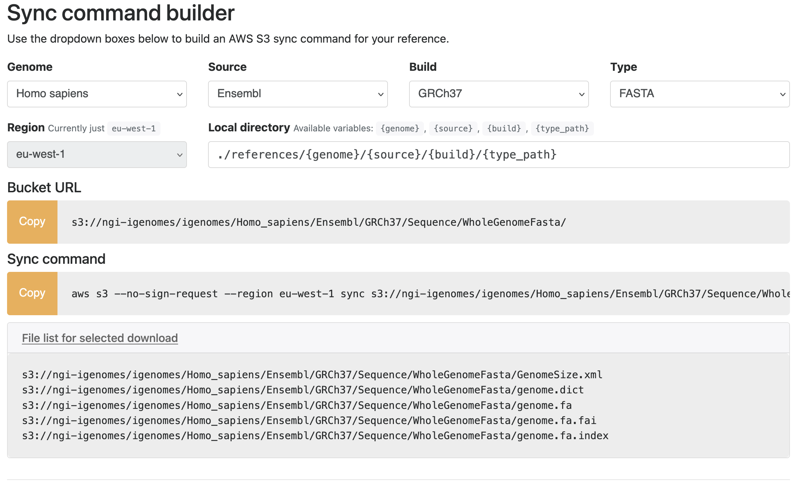
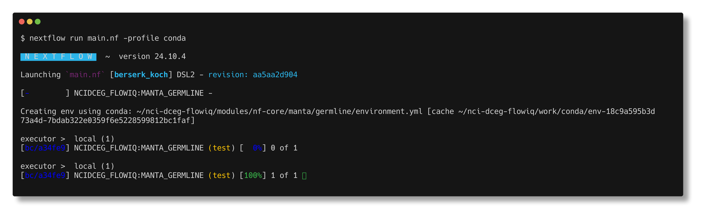
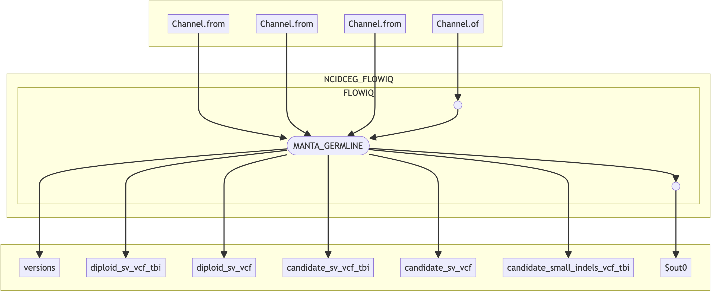

Step 5: Build a One-Step Workflow
When you first enter your newly created pipeline directory, you'll see a few files and directories generated by nf-core:

For now, we'll focus on main.nf, which is the core Nextflow script where we'll integrate the Manta module into our custom pipeline.
Understanding main.nf
The first few lines of main.nf outline the pipeline's basic structure:
/*
~~~~~~~~~~~~~~~~~~~~~~~~~~~~~~~~~~~~~~~~~~~~~~~~~~~~~~~~~~~~~~~~~~~~~~~~~~~~~~~~~~~~~~~~
nci-dceg/flowiq
~~~~~~~~~~~~~~~~~~~~~~~~~~~~~~~~~~~~~~~~~~~~~~~~~~~~~~~~~~~~~~~~~~~~~~~~~~~~~~~~~~~~~~~~
Github : https://github.com/nci-dceg/flowiq
----------------------------------------------------------------------------------------
*/
/*
~~~~~~~~~~~~~~~~~~~~~~~~~~~~~~~~~~~~~~~~~~~~~~~~~~~~~~~~~~~~~~~~~~~~~~~~~~~~~~~~~~~~~~~~
IMPORT FUNCTIONS / MODULES / SUBWORKFLOWS / WORKFLOWS
~~~~~~~~~~~~~~~~~~~~~~~~~~~~~~~~~~~~~~~~~~~~~~~~~~~~~~~~~~~~~~~~~~~~~~~~~~~~~~~~~~~~~~~~
*/
include { FLOWIQ } from './workflows/flowiq'
include { PIPELINE_INITIALISATION } from './subworkflows/local/utils_nfcore_flowiq_pipeline'
include { PIPELINE_COMPLETION } from './subworkflows/local/utils_nfcore_flowiq_pipeline'
include { getGenomeAttribute } from './subworkflows/local/utils_nfcore_flowiq_pipeline'
Locate the section labeled IMPORT FUNCTIONS / MODULES / SUBWORKFLOWS / WORKFLOWS. This is where you'll add the include statement for the Manta module you installed in Step 4. Add it directly below the existing include lines. This statement allows your pipeline to reference the module, which lives in the modules/ directory at the root of your project.
Understanding nextflow.config
Now, let's look at the configuration file at the root of your pipeline: nextflow.config. This file is key for:
- Setting pipeline-wide parameters.
- Defining default values used throughout the workflow.
- Referencing additional config files (like
conf/igenomes.config).
For example, you might see this line in the params block:
igenomes_base = 's3://ngi-igenomes/igenome'
This line specifies the base path for AWS-hosted reference genome files. But how does your pipeline use it?
In main.nf, you might find a line like:
params.fasta = getGenomeAttribute('fasta')
This line leverages the getGenomeAttribute function, which was automatically included earlier. It dynamically builds the path to the correct reference file based on the genome build you've selected. For instance, if params.genome = 'GRCh37', the FASTA file path would resolve to:
s3://ngi-igenomes/igenomes/Homo_sapiens/Ensembl/GRCh37/Sequence/WholeGenomeFasta/genome.fa
You can verify this logic by checking the contents of conf/igenomes.config, which supports various igenomes references:

Understanding Manta's Requirements
To effectively use the Manta module, it's crucial to understand its expected inputs and outputs. The best place to find this information is the nf-core module page:
🔗 https://nf-co.re/modules/manta_germline/
On this page, you'll find:
- A module description.
- Detailed input/output channel definitions.
- Parameter requirements.
- A link to the module's source code on GitHub.
The corresponding GitHub repository is:
🔗 https://github.com/nf-core/modules/tree/master/modules/nf-core/manta/germline
💡 Tip: Each
nf-coremodule page also includes links to more in-depth documentation at the bottom.
All the information on the module's webpage is backed by its meta.yml file, located at modules/nf-core/manta/germline/meta.yml.
Let's dive into the input requirements for Manta as outlined on its webpage. You'll notice it specifies four distinct input blocks, some grouped under meta, meta2, and meta3 variables, which bundle related values.
Here's a breakdown of each input block:
-
BAM/CRAM/SAM files + their indexes:
- These are the aligned sequencing reads (
.bamor.cramfiles) thatMantawill analyze. - Each input alignment file (e.g.,
.bam) must have a corresponding index file (.baifor BAM,.craifor CRAM). - For joint calling (analyzing multiple samples together), you can pass in multiple files.
- These are the aligned sequencing reads (
-
Target regions (optional, for exome or targeted panels):
- A BED file, often compressed (
.bed.gz), instructsMantato limit variant calling to specific genomic regions (like exons). - It requires an accompanying
.tbiindex file for quick access.
- A BED file, often compressed (
-
Reference genome: FASTA file + index:
- The
fastafile (grouped withmeta2) is the reference genome. Your generatedmain.nfalready has a section for managing this. - The
faifile (grouped withmeta3) is its corresponding FASTA index.
- The
-
Optional config file:
- This allows you to customize
Manta's settings by providing your own configuration file.
- This allows you to customize
❓ What Do I Need to Run Manta?
To successfully run the Manta module, you'll need the following input files:
✅ Required
- One
.bamor.cramfile per sample, paired with its.baior.craiindex. - A reference genome in
.faformat, along with its.fa.faiindex.
🟡 Optional
- A BED file (
.bed.gz) for targeted calling, plus its.tbiindex. - A custom
Mantaconfiguration file.
Where to Find Example Input Files
The best place to start is by examining the nf-core module test file:
modules/nf-core/manta/germline/tests/main.nf.test
Every nf-core module includes a main.nf.test file. This file defines how to test the module using small example datasets, typically sourced from the nf-core/test-datasets repository:
🔗 https://github.com/nf-core/test-datasets
You can also find a detailed guide on using this data here:
🔗 https://github.com/nf-core/test-datasets/blob/master/docs/USE_EXISTING_DATA.md
About the Test Datasets
The test-datasets repository has a special modules branch specifically for individual module tests:
This branch of the
nf-core/test-datasetsrepository contains all data used for the individual module tests.
We'll use this branch to test our Manta module.
What main.nf.test Expects
If you open main.nf.test, you'll notice it references inputs like this:
file(params.modules_testdata_base_path + 'genomics/homo_sapiens/illumina/cram/test.paired_end.sorted.cram', checkIfExists: true)
This indicates we need to define the base path params.modules_testdata_base_path in a configuration file.
️Setting Up manta_input_data_base_path
Instead of modifying the main nextflow.config, it's generally cleaner to add this to a specific profile, such as the testing profile.
In nextflow.config, you'll find a test profile:
test {
includeConfig 'conf/test.config'
}
Edit the conf/test.config file and add the following:
// Input data
// nf-core: Specify the paths to your test data from the test-datasets repo
modules_testdata_base_path = 'https://raw.githubusercontent.com/nf-core/test-datasets/modules/data/'
This approach leverages the GitHub raw URL, allowing Nextflow to directly access the files.
Running the Module Test
Once your configuration is set, you can run the test using the nf-test tool (a framework for testing Nextflow pipelines and modules):
nf-core modules test manta/germline -profile conda,test

Now that we've seen how to test the Manta module using nf-core test data, we understand its required inputs, where to find example datasets, and how to configure them using Nextflow.
Let's apply that knowledge by modifying our main.nf script to build our own pipeline.
Integrating Manta into main.nf
From examining and running the main.nf.test script for Manta, we can see that for the simplest test case (test("human - cram")), there are four main input blocks. We'll model our main.nf after these.
First, let's look at the sample input block from the test:
input[0] = [ [ id:'test'], // meta map
file(params.modules_testdata_base_path + 'genomics/homo_sapiens/illumina/cram/test.paired_end.sorted.cram', checkIfExists: true),
file(params.modules_testdata_base_path + 'genomics/homo_sapiens/illumina/cram/test.paired_end.sorted.cram.crai', checkIfExists: true),
[],[]
]
This represents a single sample CRAM file and its index, with no BED or BED index specified.
Next, we have the reference FASTA input sections:
// fasta
input[1] = [ [id:'genome'],file(params.modules_testdata_base_path + 'genomics/homo_sapiens/genome/genome.fasta', checkIfExists: true)]
// fai
input[2] = [ [id:'genome'],file(params.modules_testdata_base_path + 'genomics/homo_sapiens/genome/genome.fasta.fai', checkIfExists: true)]
Followed by the config input:
// config
input[3] = Channel.of("[manta]", "enableRemoteReadRetrievalForInsertionsInGermlineCallingModes = 0")
.collectFile(name:"manta_options.ini", newLine:true)
We'll discuss how to best organize the workflow later, but for now, let's reuse these inputs in our pipeline and add them to the main.nf script at the root of your repository.
Defining Input Data Paths
The first section you'll notice in main.nf after the import statements is GENOME PARAMETER VALUES. Here, nf-core has pre-populated the line params.fasta = getGenomeAttribute('fasta'). The Manta module's second input block is for the FASTA and its corresponding index file.
While this getGenomeAttribute function is excellent for production runs with whole genome FASTA files from igenomes (see the dropdown below for details), for this tutorial, we'll stick with the simple example file used in the Manta test cases.
Using Whole Genome FASTA File
The `getGenomeAttribute` function (`def getGenomeAttribute(attribute)`) is designed to fetch genome-specific attributes. As you can see from its definition (which you can find using `git grep getGenomeAttribute`):def getGenomeAttribute(attribute)
{
if (params.genomes && params.genome && params.genomes.containsKey(params.genome))
{
if (params.genomes[ params.genome ].containsKey(attribute))
{
return params.genomes[ params.genome ][
attribute ]
}
}
return null
}
// References
genome = null
igenomes_base = 's3://ngi-igenomes/igenomes/'
When we ran our Manta module test, we added the following to conf/test.config:
// Input data
// TODO nf-core: Specify the paths to your test data on nf-core/test-datasets
modules_testdata_base_path = 'https://raw.githubusercontent.com/nf-core/test-datasets/modules/data/'
Let's adapt this parameter for our main configuration file, nextflow.config, by renaming it and adding it to the params scope. Paste the following:
// Input options
manta_input_data_base_path = 'https://raw.githubusercontent.com/nf-core/test-datasets/modules/data/'
Creating Input Channels in main.nf
Now, let's update our main.nf script by adding our inputs as channels. Nextflow is built on a dataflow programming model, where processes communicate through channels, which are fundamental for moving data through your pipeline. You can learn more about them here:
🔗 https://www.nextflow.io/docs/latest/channel.html
Add the following CHANNEL DEFINITIONS section to your main.nf script:
/*
~~~~~~~~~~~~~~~~~~~~~~~~~~~~~~~~~~~~~~~~~~~~~~~~~~~~~~~~~~~~~~~~~~~~~~~~~~~~~~~~~~~~~~
CHANNEL DEFINITIONS
~~~~~~~~~~~~~~~~~~~~~~~~~~~~~~~~~~~~~~~~~~~~~~~~~~~~~~~~~~~~~~~~~~~~~~~~~~~~~~~~~~~~~~
*/
// Channel for the first input: tuple val(meta), path(input), path(index), path(target_bed), path(target_bed_tbi)
Channel.from([
tuple(
[ id: 'test' ], // meta
file(params.manta_input_data_base_path + 'genomics/homo_sapiens/illumina/cram/test.paired_end.sorted.cram', checkIfExists: true), // input (CRAM)
file(params.manta_input_data_base_path + 'genomics/homo_sapiens/illumina/cram/test.paired_end.sorted.cram.crai', checkIfExists: true), // index (CRAI)
[], // target_bed (empty list, as no BED is used for this basic test)
[] // target_bed_tbi (empty list)
)
]).set { manta_main_input_ch } // This channel matches the first input signature
// Channel for the second input: tuple val(meta2), path(fasta)
Channel.from([
tuple(
[ id: 'genome' ], // meta2
file(params.manta_input_data_base_path + 'genomics/homo_sapiens/genome/genome.fasta', checkIfExists: true) // fasta
)
]).set { manta_fasta_ch }
// Channel for the third input: tuple val(meta3), path(fai)
Channel.from([
tuple(
[ id: 'genome' ], // meta3
file(params.manta_input_data_base_path + 'genomics/homo_sapiens/genome/genome.fasta.fai', checkIfExists: true) // fai
)
]).set { manta_fai_ch }
// Channel for the fourth input: path(config)
Channel
.of("[manta]", "enableRemoteReadRetrievalForInsertionsInGermlineCallingModes = 0")
.collectFile(name: "manta_options.ini", newLine: true)
.set { manta_config_ch }
Essentially, we're taking the input syntax from the tests/main.nf.test script and wrapping these inputs in Nextflow channels.
Calling the Manta Module
With the input channels defined, we can now call our module within the main workflow:
/*
~~~~~~~~~~~~~~~~~~~~~~~~~~~~~~~~~~~~~~~~~~~~~~~~~~~~~~~~~~~~~~~~~~~~~~~~~~~~~~~~~~~~~~~
NAMED WORKFLOWS FOR PIPELINE
~~~~~~~~~~~~~~~~~~~~~~~~~~~~~~~~~~~~~~~~~~~~~~~~~~~~~~~~~~~~~~~~~~~~~~~~~~~~~~~~~~~~~~~
*/
workflow NCIDCEG_FLOWIQ {
main:
// Call MANTA_GERMLINE, feeding the channels in the correct order
// as defined in the module's 'input:' block
MANTA_GERMLINE(
manta_main_input_ch, // Corresponds to `tuple val(meta), path(input), path(index), path(target_bed), path(target_bed_tbi)`
manta_fasta_ch, // Corresponds to `tuple val(meta2), path(fasta)`
manta_fai_ch, // Corresponds to `tuple val(meta3), path(fai)`
manta_config_ch // Corresponds to `path(config)`
)
}
/*
~~~~~~~~~~~~~~~~~~~~~~~~~~~~~~~~~~~~~~~~~~~~~~~~~~~~~~~~~~~~~~~~~~~~~~~~~~~~~~~~~~~~~~~
RUN MAIN WORKFLOW
~~~~~~~~~~~~~~~~~~~~~~~~~~~~~~~~~~~~~~~~~~~~~~~~~~~~~~~~~~~~~~~~~~~~~~~~~~~~~~~~~~~~~~~
*/
workflow {
main:
NCIDCEG_FLOWIQ()
}
/*
~~~~~~~~~~~~~~~~~~~~~~~~~~~~~~~~~~~~~~~~~~~~~~~~~~~~~~~~~~~~~~~~~~~~~~~~~~~~~~~~~~~~~~~
THE END
~~~~~~~~~~~~~~~~~~~~~~~~~~~~~~~~~~~~~~~~~~~~~~~~~~~~~~~~~~~~~~~~~~~~~~~~~~~~~~~~~~~~~~~
*/
Running Your Pipeline
Now that your main.nf is updated, you can test the pipeline:
nextflow run main.nf -profile conda

You've now created a minimal pipeline that successfully runs the Manta module!
Finishing Touches: Organizing Your Pipeline
Now that we have a working pipeline, let's take a moment to clean things up and follow nf-core best practices.
Open your main.nf script. Near the top, you'll see a section like this:
/********************************************************************************************************
IMPORT FUNCTIONS / MODULES / SUBWORKFLOWS / WORKFLOWS
********************************************************************************************************/
include { FLOWIQ } from './workflows/flowiq'
This line tells us that the pipeline is importing a workflow definition from the flowiq script located in the workflows/ directory.
👉 The nf-core convention is to keep the root main.nf minimal and delegate all workflow logic to these included scripts. This significantly improves readability, scalability, and maintainability as your pipeline grows.
Since we've added the Manta module to our pipeline, we should also relocate its include statement:
include { MANTA_GERMLINE } from '../modules/nf-core/manta/germline'
This import should live in workflows/flowiq.nf instead of main.nf, because that's where the logic using it will reside.
In short: keep main.nf tidy and focused on high-level orchestration, and let flowiq.nf handle the details of your workflow.
Once you've done that, your pipeline will not only run correctly but also follow a clean, modular design that's easier to share and maintain.
Connecting Modules: Emitting Outputs
Finally, let's look at how to connect modules in a multi-step pipeline where you need to use the output from one module as input to another.
The MANTA_GERMLINE module produces several outputs, as defined in its main.nf script. To make these outputs available to other processes or for further use in your workflow, you need to emit them from your workflow.
Here's how you can do that within your FLOWIQ workflow:
workflow FLOWIQ {
main:
MANTA_GERMLINE(
manta_main_input_ch, // Corresponds to `tuple val(meta), path(input), path(index), path(target_bed), path(target_bed_tbi)`
manta_fasta_ch, // Corresponds to `tuple val(meta2), path(fasta)`
manta_fai_ch, // Corresponds to `tuple val(meta3), path(fai)`
manta_config_ch // Corresponds to `path(config)`
)
emit:
candidate_small_indels_vcf = MANTA_GERMLINE.out.candidate_small_indels_vcf
candidate_small_indels_vcf_tbi = MANTA_GERMLINE.out.candidate_small_indels_vcf_tbi
candidate_sv_vcf = MANTA_GERMLINE.out.candidate_sv_vcf
candidate_sv_vcf_tbi = MANTA_GERMLINE.out.candidate_sv_vcf_tbi
diploid_sv_vcf = MANTA_GERMLINE.out.diploid_sv_vcf
diploid_sv_vcf_tbi = MANTA_GERMLINE.out.diploid_sv_vcf_tbi
versions = MANTA_GERMLINE.out.versions
}
We obtain the names of the output variables directly from the output: block of the manta/germline/main.nf script (e.g., emit: candidate_small_indels_vcf). These are then assigned to new variables within the emit block of our FLOWIQ workflow.
To verify that everything is working as expected, you can include a simple line in your workflow to print the contents of an output channel:
candidate_small_indels_vcf.view()
You can also inspect the Directed Acyclic Graph (DAG) generated in the output directory specified by params.outdir in nextflow.config. It provides a visual overview of the data flow between processes. For example:

This helps confirm the structure and behavior of your pipeline by showing how data moves through each channel.
Note: The main.nf and workflows/flowiq.nf scripts are included in this repository for your reference — in fact, we included the entire pipeline repository in nci-dceg-flowiq.